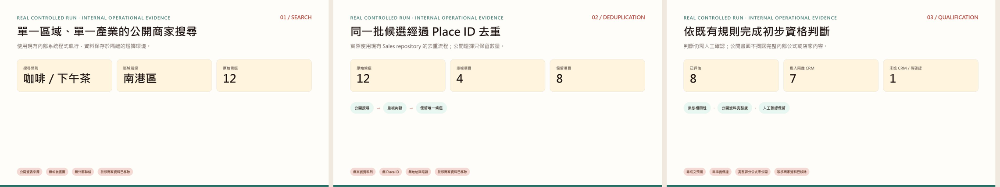
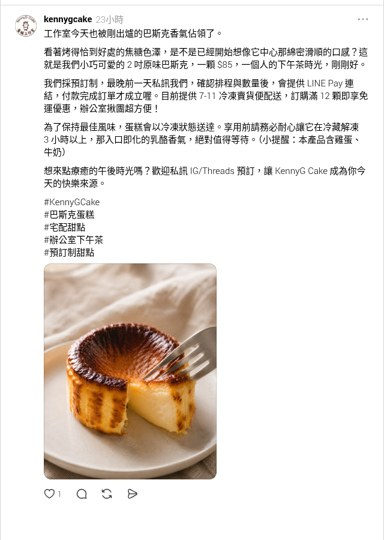
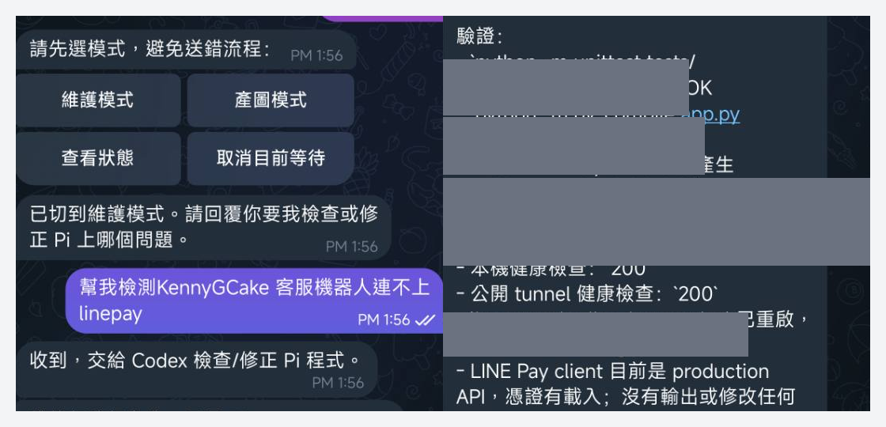
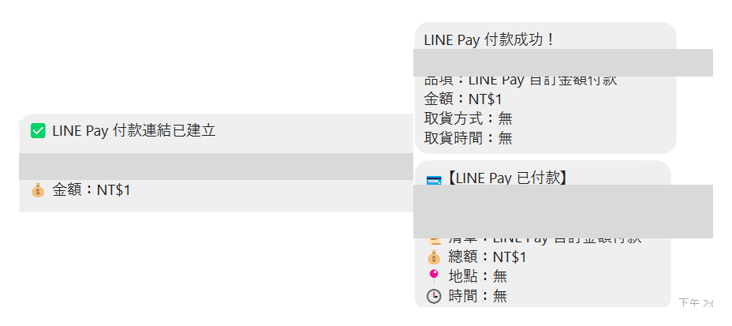
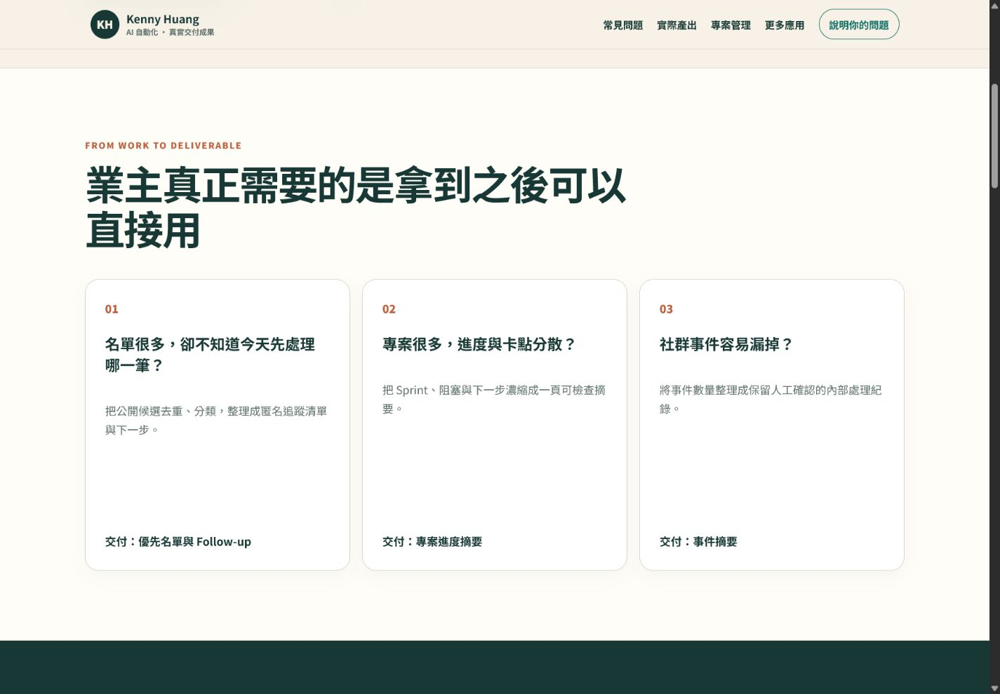
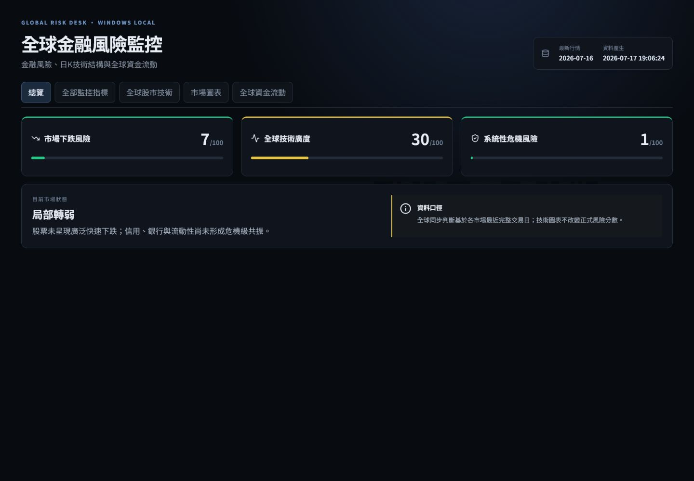

AI 業務助理

整理公開候選、去重與下一步任務。
第一位 · 使用頻率最高

第二位 · 真實遠端互動
Telegram 維護要求 ↓ 遠端診斷與修正 ↓ LINE 修復前後 ↓ NT$1 驗證成功


此案例為受控 NT$1 測試，不計為營收；AI 工程流程在明確權限與人工授權下執行，不代表完全自主修復或永久穩定。
其他支援角色
它們已在實際工作中使用，但不是這一版網站的主角，也不增加聊天截圖。

整理公開候選、去重與下一步任務。

整理進度、阻塞與待決策事項。

整理多來源公開資料與異常提示。
START WITH ONE ROLE
告訴我每天最重複、最花時間或最常出問題的工作。